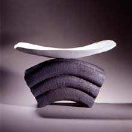
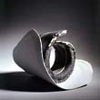
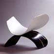

| Aline
Favre
Swiss studio potter
Aline
Favre is a Swiss ceramic artist. She studied in Geneva at
the School of Decorative Arts from 1949-1953. She taught at the
Academy of Fine Art from 1960-1965 and at the School of Decorative
Arts from 1965-1990.
In 1978 she was awarded a gold medal in Faenza in
collaboration with Florent Zeller. Aline Favre is known for her
abstract sculpture, combining rough black stoneware with fine white
porcelain. Her sculpture is abstract, but displays a fine, appealing
sensibility for harmony of form and a balanced dichotomy between
the two poles of coarse black stoneware and white porcelain.
Her work has gained international recognition and
can be found in various public museums and galleries in Switzerland,
Germany, Holland and Japan. She is represented in Switzerland by
Objekta Galerie.

"In my work, I like creating dialogs. White,
pure and delicate porcelain is confronted to other materials as
raw and black stonewares, very "chamottés" (grogged
[ed.]). Their specific languages allow me to play with and to fit
them together into space. Oppositions are made of light and heavy,
delicate and raw, white and black. Fire reveals their particularities
mixing tightness, collapse, tearing. As life, with its succession
of memories and emotions, I carry on the dialog".
More Articles
More Artists of the Week
|
{kind=link}
{kind=link}
{kind=link}